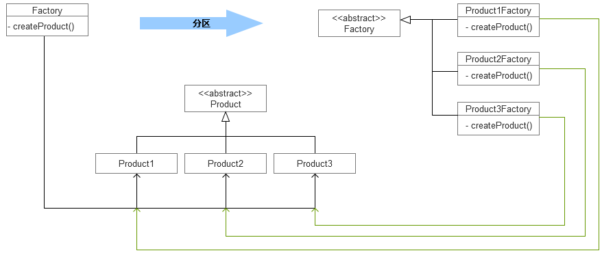

白话设计模式(一)：创建型设计模式
- Name : 王伟
- Department : 智能金融部
- Email : hzwangwei6@corp.netease.com
创建型设计模式
- 工厂模式：Factory
- 原型模式：Prototype
- 建造模式：Builder
- 单例模式：Singleton
工厂模式
工厂模式分离了对象的构造与使用，使用者与目标对象的强依赖关系转变成了松耦合。
工厂模式的特点：
- 松耦合，构造对象有了扩展性
- 工厂模式让使用者创建对象的过程更加精简、优雅
- 对象的创建可以集中管理：对象可以重复利用、可以被监控等
工厂模式带来的问题：
- 类的数量增多了，在一定程度上增加了系统的复杂度
- 工厂模式分为三类：简单工厂、工厂方法、抽象工厂：缺点不尽相同
"简单工厂"
又称静态工厂方法(Static Factory Method)模式
// 摘自 jdk1.7：java.lang.Integer
public static Integer valueOf(int i) {
assert IntegerCache.high >= 127;
if (i >= IntegerCache.low && i <= IntegerCache.high)
return IntegerCache.cache[i + (-IntegerCache.low)];
return new Integer(i);
}
"简单工厂"-示例2
// 摘自 commons-collections：org.apache.commons.collections.CollectionUtils
public static int size(Object object) {
int total = 0;
if (object instanceof Map) {
total = ((Map) object).size();
} else if (object instanceof Collection) {
total = ((Collection) object).size();
} else if (object instanceof Object[]) {
total = ((Object[]) object).length;
} else if (object instanceof Iterator) {
Iterator it = (Iterator) object;
while (it.hasNext()) {
total++;
it.next();
}
} else if (object instanceof Enumeration) {
Enumeration it = (Enumeration) object;
while (it.hasMoreElements()) {
total++;
it.nextElement();
}
} else if (object == null) {
throw new IllegalArgumentException("Unsupported object type: null");
} else {
try {
total = Array.getLength(object);
} catch (IllegalArgumentException ex) {
throw new IllegalArgumentException("Unsupported object type: " + object.getClass().getName());
}
}
return total;
}
"简单工厂"的特点
- 静态方法：
- 根据入参明确"产品"类型：
- 增加新的"产品"需要修改工厂类的判断逻辑代码：
- "产品"数量影响工厂方法的复杂度：
哪些场景适合使用"简单工厂"模式？
"简单工厂"使用场景
工厂类负责创建的对象比较少；客户端只知道传入工厂类的参数，不关心创建对象的过程。
- 工具类封装，简化创建过程：newDate() 、 newTimestamp()返回当前日期
- 对象的创建需要集中化管理：线程、连接的重复利用
- 与目标对象松耦合：例如我们提供统一的缓存标准，实现方式有redis、memcached，通过配置使用不同的实现类
jdk中的"简单工厂"：
- java.lang.Integer#valueOf
- java.lang.Class#newInstance
- java.lang.reflect.Constructor#newInstance
- java.text.DateFormat#getInstance
"简单工厂"的缺点
上篇说到过："产品"数量影响工厂方法的复杂度
如何解决？
eg：系统架构中，单机访问遇到瓶颈，如何处理？
分区
"工厂方法"的特点
四种角色：抽象产品、具体产品、抽象工厂、具体工厂
- 工厂类有继承关系：
- 增加新的"产品"需要增加工厂类：符合开闭原则，"产品"数量成倍增长
- 具体工厂生产具体"产品"：无法增加新的"产品类"，eg：能让LoggerFactory拥有BeanFactory的功能？
- 工厂模式的退化：具体工厂生产具体"产品"
"工厂方法"解决了"简单工厂""产品"数量多的问题，出现新的问题：无法增加新的"产品类"，"产品"数量成倍增长
哪些场景适合使用"工厂方法"模式？
"工厂方法"使用场景
- 需要保证具体"产品"的隔离性：获取配置信息：json/xml/ini/yaml，封装成不同的package
jdk中的"工厂方法"：
- java.lang.Integer#valueOf
- java.lang.Class#newInstance
- java.lang.reflect.Constructor#newInstance
- java.text.DateFormat#getInstance
"抽象工厂"
"抽象工厂"使用场景
jdk中的"抽象工厂"：
- java.util.Calendar#getInstance
- java.text.NumberFormat#getInstance
- java.sql.Connection：Statement、PreparedStatement、CallableStatement
三种"工厂"模式对比
"原型模式"
通过"复制"一个已经存在的实例来返回新的实例
UserVO convertDO2VO(UserDO userDO) {
UserVO userVO = new UserVO();
userVO.setName(userDO.getName());
userVO.setAge(userDO.getAge());
userVO.setBirthday(DateFormatUtils.format(userDO.getBirthday(), "yyyy-MM-dd"));
// ... ...
return userVO;
}
"原型模式"使用场景
java.lang.Object#clone
java.lang.Cloneable
-
创建值相等，但不同用途的"同类"对象
DO->VO
对象在操作过程中值发生变化，不适用于下次操作 -
创建复杂或者耗时的实例
eg：httpclient 4.4+
org.apache.http.client.config.RequestConfig#copy(RequestConfig)
克隆配置 && 减少参数校验
浅克隆和深克隆的区别？
"建造模式"
类A的实例化交由类B
public class Maps {
public static Map newMap() {
return new HashMap();
}
}
"建造模式"使用场景
-
私有化对象构造，不透明
-
统一构造、校验
jdk中的"建造模式"：
- java.lang.StringBuilder
- java.sql.PreparedStatement
- java.nio.ByteBuffer
"单例模式"
类A的实例化交由类B
public class Maps {
public static Map newMap() {
return new HashMap();
}
}
"单例模式"使用场景
-
只有或者只能一个对象
ID生成器/
-
一个对象实例会消耗比较多的资源
配置中心的client，无需创建多个Connection
jdk中的"单例模式"应用示例：
- java.lang.Runtime#getRuntime
如何用"懒汉方式"和"饿汉方式"分别写一个单例？
常见问题
-
是否一定要用设计模式？
no！！！让代码易维护、易扩展的模式就是最好的模式！
Thanks
- Q/A
- 如果您觉得还不错，还请关注微信公众号：

- 微信扫描上方二维码，或者搜索并关注微信公众号： 众山神
/